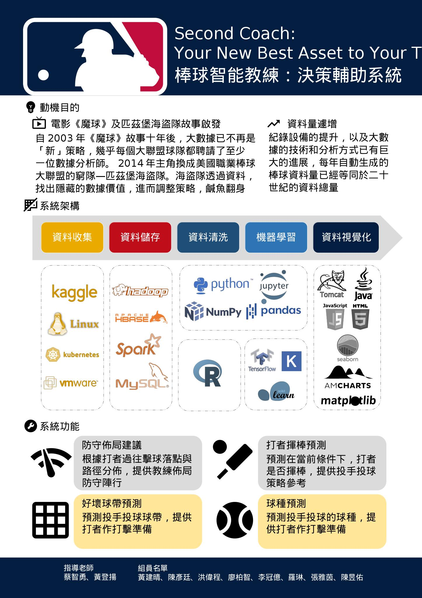

Big Data Engineer
Hsinchu, TW
alexzalox@gmail.com
Skills
Statistics
Python
R
Hadoop
Languages
Chinese
English
Taiwanese
"Second Coach: Your New Best Asset to Your Team". 棒球智慧教練-決策輔助系統 What can our system do?
■ 1.Shift recommendations.
■ 2.Hitter swing prediction.
■ 3.Zone prediction：PitchFX zone number. Labeled as 1-9 for inside strikezone and 11-14 for outside strikezone. There is no 10. (from a pitcher's perspective).
■ 4.Pitch-type prediction.
System Structure
■ Data Collection and Storage：Kaggle, VMware, Linux, K8s, Hadoop, Hive, HBase, Spark, Zookeeper, MySQL.
■ Data Washed ：R, Python, Jupyter, Numpy, Pandas.
■ Machine Learning ：Scikit-learn, Keras, Tensorflow, Feature engineering, Decision trees, Multivariate logistic regression, kNN,...etc.
■ Visualization ：Matplotlib, Seaborn, AmCharts, Java, Tomcat, JavaScript, HTML, CSS.

■The industry master class reviews enrollment and other related matters
■Audit project of m.o.e. about aboard students back to Taiwan due to Covid-19.
■Industry-University Cooperation Plan Special Class Review, Enrollment Regulations Approval, Fund Appropriation and Write-off
■Subsidy operations for the technical excellence pilot program.
■Web Site Link: DACC
-Go to schools on business and collect data of Diagnostic Assessment of Chinese Competence (DACC) from elementary school to university.
-Manage the back-end of DACC system.
■Web Site Link: SmartReading
-Proposition research and development project progress control, Text proofreading, Question database management.
■Familiar with 【Web/Mobile】
-Mahjong games: Shen Lai Ye Mahjong, 13 Mahjong, Two Player Mahjong
-Poker games: Texas Hold'em, Big Old 2, 13, Solitaire, Fighting Landlord, Big D
-Shooting games: instant gun battle, Tank Hit tank battle, deadly gun battle
■Product activities and testing on various platforms, looking for bugs, vulnerabilities, errors, and confirming the problem recurrence process.
■Write bugs and suggestion reports after testing, provide relevant departments for modification communication, and continuous testing and verification.
■Collect relevant game data on the market.
■Support for project needs of other departments.
■Marketing planning activities execution.
-Self-curated book exhibition on Mid-Autumn Festival.中秋個人自策展
-Old School Life Proposal Book Fair.老派生活提案展
-Shakespeare 400th Anniversary Book Fair.莎士比亞400周年紀念書展
-Eslite Book Fair 2015 TOP100 Book Fair.誠品2015年度TOP100書展
-Eslite Xinyi Forum personal self-curated book exhibition：Welcome to House of Novels.誠品信義Forum個人自策書展:歡迎來到小說家
■Responsible for the operation of commodities and library area.
■Adjustment of the combination of goods on the shelves and control of the sales situation.
■Commodity inventory management.
■Share performance evaluation and jointly create higher business goals
■Concerned about cultural trends, with sales creativity and goal attempts.
Leader of MLB Big Data Project "Second Coach: Your New Best Asset to Your Team" 棒球智慧教練-決策輔助系統
■Captain of Department of Statistics basketball team,
■Student Association of Statistics Department,
■Hsin-chu Area Alumni Association.
■Table Tennis Club ■Recreational Guidance Association ■Japanese Culture Club ■Swimming Club